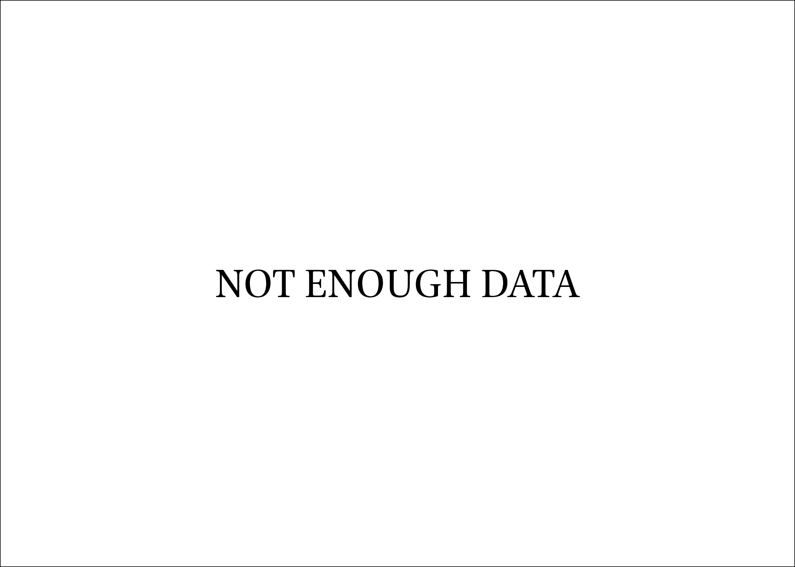

0902Sakhawi.DawLamic.ITO20230111-ara1.EIS1600.410152669625
Biography ID: 410152669625
193
محمد بن محمد بن الحسن بن علي بن سليمان بن عمر بن محمد الشمس الحلبي الحنفي الماضي أبوه والآتي ابنه الشمس محمد ويعرف بابن أمير حاج وبابن الموقت . ولد سنة إحدى وتسعين وسبعمائة . وقيل في التي بعدها والاول أولى بحلب . ونشأ بها فقرأ القرآن عند جماعة منهم الشمسان الغزي والجشمسي نسبة لقرية من أعمال حلب وسمع بعض الصحيح على ابن صديق وقرأ المختار على البدر بن سلامة والعز الحاضري وغيرهما وتعانى الميقات وباشر ذلك بالجامع الكبير بحلب وتنزل طالبا بالحلاوية بل استقر بعد أبيه في تدريس الجردكية ثم نزل عنها وباشر التوقيع عند قضاة حلب ثم صار جابيا في الأسواق ، وحج وزار بيت المقدس وحدث وسمع منه الفضلاء ولقيته بحلب فقرأت عليه المائة لابن تيمية ، وكان صالحا راغبا في الانجماع عن الناس . مات في شوال سنة ثمان وستين بحلب رحمه الله وإيانا .
